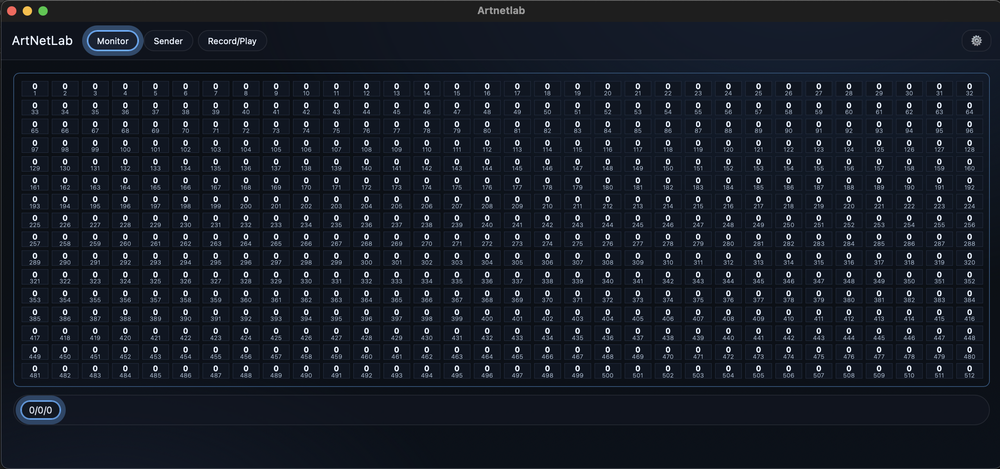

ArtNetLab is a modern desktop application for professional DMX lighting control and monitoring. Built with React and TypeScript frontend and Rust backend, it provides comprehensive Art-Net tools for lighting professionals.
Features
- 🎛️ 512 individual DMX faders with dual input methods
- 📊 Real-time Art-Net monitoring with interactive tooltips
- 🎚️ Master control with real-time scaling
- 🔄 Built-in animation engine (sinusoid, ramp, square)
- 📹 Record and playback with frame-perfect timing
- 🌐 Multi-universe support and network configuration
- 🖥️ Cross-platform (macOS, Windows, Linux)
How it Works
- Monitor: Start monitoring to view incoming Art-Net data in real-time with interactive tooltips.
- Control: Use 512 individual faders or master control to send DMX data via Art-Net.
- Animate: Create automated patterns with built-in animation modes and frequency control.
- Record: Capture incoming data to JSON Lines format for later playback.
Download
Download Latest Version
Requirements
- macOS 10.15+, Windows 10+, or Linux
- 50MB of free disk space
- Network access for Art-Net communication
Support
Interface Preview
